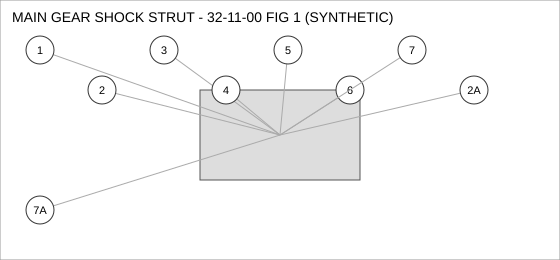
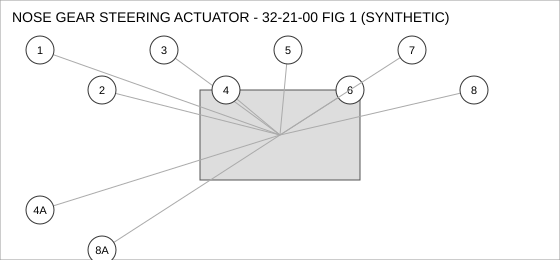
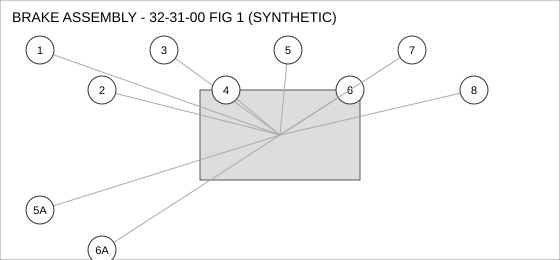
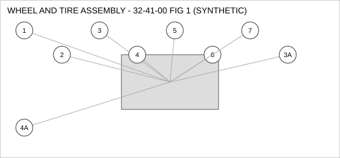

Document type: IPC | Revision: 14 | Fleet: B737
| CODE | AIRCRAFT |
|---|---|
| A | 737-700 |
| B | 737-800 |
| C | 737-MAX8 |

| FIG ITEM | PART NUMBER | NOMENCLATURE | EFFECT | UPA |
|---|---|---|---|---|
| 1 | 65-24408-22 | ACTUATOR - LINEAR, MAIN GEAR SHOCK STRUT | ALL | 1 |
| 2 | 65-87182-11 | FILTER ELEMENT, MAIN GEAR SHOCK STRUT | ALL | 1 |
| 2A | 285-81874-23 | FILTER ELEMENT, MAIN GEAR SHOCK STRUT | ALL | 1 |
| INTERCHANGEABLE WITH 65-87182-11 (TWO-WAY). | ||||
| 3 | 65-65176-17 | FITTING - ELBOW, MAIN GEAR SHOCK STRUT | ALL | 1 |
| 4 | 162-57453-17 | VALVE - CHECK, MAIN GEAR SHOCK STRUT | ALL | 4 |
| 5 | 65-90623-02 | BRACKET - MOUNTING, MAIN GEAR SHOCK STRUT | ALL | 4 |
| 6 | 60-17972-16 | SOLENOID, MAIN GEAR SHOCK STRUT | ALL | 2 |
| 7 | 162-68138-03 | WASHER - LOCK, MAIN GEAR SHOCK STRUT | C | 1 |
| 7A | 285-38183-14 | WASHER - LOCK, MAIN GEAR SHOCK STRUT | C | 1 |
| INTERCHANGEABLE WITH 162-68138-03 WHEN SB 32-2217 IS EMBODIED. | ||||

| FIG ITEM | PART NUMBER | NOMENCLATURE | EFFECT | UPA |
|---|---|---|---|---|
| 1 | 65-72163-03 | BOLT, NOSE GEAR STEERING ACTUATOR | ALL | 1 |
| 2 | 60-58843-26 | SWITCH - PRESSURE, NOSE GEAR STEERING ACTUATOR | ALL | 1 |
| 3 | 285-83620-11 | CONNECTOR - ELECTRICAL, NOSE GEAR STEERING ACTUATOR | ALL | 1 |
| 4 | 162-16743-10 | SENSOR - PRESSURE, NOSE GEAR STEERING ACTUATOR | ALL | 4 |
| 4A | 69-54541-12 | SENSOR - PRESSURE, NOSE GEAR STEERING ACTUATOR | ALL | 4 |
| ALTERNATE FOR 162-16743-10. PARTS ARE INTERCHANGEABLE. | ||||
| 5 | 285-76507-07 | ACTUATOR - LINEAR, NOSE GEAR STEERING ACTUATOR | ALL | 1 |
| 6 | 60-55890-28 | FITTING - ELBOW, NOSE GEAR STEERING ACTUATOR | ALL | 4 |
| 7 | 69-85248-08 | GASKET, NOSE GEAR STEERING ACTUATOR | ALL | 2 |
| 8 | 285-90422-22 | NUT - SELF-LOCKING, NOSE GEAR STEERING ACTUATOR | A | 4 |
| 8A | 60-22026-24 | NUT - SELF-LOCKING, NOSE GEAR STEERING ACTUATOR | A | 4 |
| INTERCHANGEABLE WITH 285-90422-22 (TWO-WAY). | ||||

| FIG ITEM | PART NUMBER | NOMENCLATURE | EFFECT | UPA |
|---|---|---|---|---|
| 1 | 65-90981-02 | BOLT, BRAKE ASSEMBLY | ALL | 1 |
| 2 | 162-73656-20 | ACTUATOR - LINEAR, BRAKE ASSEMBLY | ALL | 2 |
| 3 | 285-24918-12 | SEAL - O-RING, BRAKE ASSEMBLY | ALL | 2 |
| 4 | 285-73783-17 | PUMP - TRANSFER, BRAKE ASSEMBLY | ALL | 1 |
| 5 | 285-17180-01 | DUCT - FLEXIBLE, BRAKE ASSEMBLY | ALL | 1 |
| SUPERSEDED BY 162-85156-13 | ||||
| 5A | 162-85156-13 | DUCT - FLEXIBLE, BRAKE ASSEMBLY | ALL | 1 |
| REPLACES 285-17180-01. THIS PART MAY REPLACE 285-17180-01; 285-17180-01 MAY NOT BE USED TO REPLACE THIS PART. | ||||
| 6 | 65-43491-10 | SOLENOID, BRAKE ASSEMBLY | B C | 1 |
| SUPERSEDED BY 69-32527-26 | ||||
| 6A | 69-32527-26 | SOLENOID, BRAKE ASSEMBLY | B C | 1 |
| REPLACES 65-43491-10. THIS PART MAY REPLACE 65-43491-10; 65-43491-10 MAY NOT BE USED TO REPLACE THIS PART. | ||||
| 7 | 162-33028-05 | SENSOR - TEMPERATURE, BRAKE ASSEMBLY | ALL | 2 |
| 8 | 285-83233-27 | COUPLING - QUICK DISCONNECT, BRAKE ASSEMBLY | C | 1 |

| FIG ITEM | PART NUMBER | NOMENCLATURE | EFFECT | UPA |
|---|---|---|---|---|
| 1 | 69-54500-08 | CONNECTOR - ELECTRICAL, WHEEL AND TIRE ASSEMBLY | ALL | 1 |
| 2 | 60-79547-17 | SENSOR - PRESSURE, WHEEL AND TIRE ASSEMBLY | ALL | 1 |
| 3 | 65-40968-04 | CLAMP - V-BAND, WHEEL AND TIRE ASSEMBLY | ALL | 1 |
| 3A | 285-19724-10 | CLAMP - V-BAND, WHEEL AND TIRE ASSEMBLY | ALL | 1 |
| INTERCHANGEABLE WITH 65-40968-04 (TWO-WAY). | ||||
| 4 | 285-30036-25 | COUPLING - QUICK DISCONNECT, WHEEL AND TIRE ASSEMBLY | ALL | 1 |
| SUPERSEDED BY 69-20057-21 | ||||
| 4A | 69-20057-21 | COUPLING - QUICK DISCONNECT, WHEEL AND TIRE ASSEMBLY | ALL | 1 |
| INTERCHANGEABLE WITH 285-30036-25 (TWO-WAY). | ||||
| 5 | 162-70811-25 | SWITCH - PRESSURE, WHEEL AND TIRE ASSEMBLY | A | 4 |
| 6 | 285-94278-21 | WASHER - LOCK, WHEEL AND TIRE ASSEMBLY | ALL | 4 |
| 7 | 69-29786-15 | SENSOR - TEMPERATURE, WHEEL AND TIRE ASSEMBLY | B C | 1 |